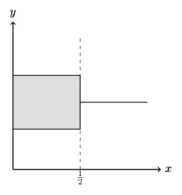
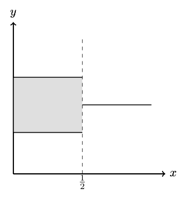

Topic 5: Optimization, Correspondences, and Existence of Solutions
(Why optimal behavior is rarely a point and often a set)
1. Why this topic sits where it does
By now we have introduced:
- sets and mappings,
- preferences and utility,
- convexity and geometry,
- continuity, closedness, compactness, and existence.
What we have not yet done is put all of this together in a single place.
This topic does exactly that. It explains how optimization problems in economics actually behave once we take all previous structure seriously.
The key message is simple but important:
Even when optimization problems are well behaved, their solutions are often sets, not points.
Understanding this is essential before moving on to equilibrium, mechanisms, or games.
2. Optimization problems revisited
A generic economic optimization problem takes the form
\[ \max_{x \in X} f(x), \]
where:
- \(X \subseteq \mathbb{R}^n\) is a feasible set,
- \(f: X \to \mathbb{R}\) is an objective function.
From Topics 3 and 4 we know that:
- convexity of \(X\) simplifies geometry,
- continuity of \(f\) and compactness of \(X\) guarantee existence.
What these assumptions do not guarantee is uniqueness.
3. Linear versus convex problems
An important special case is when:
- \(X\) is convex,
- \(f\) is linear.
In this case, if a maximum exists, it is always attained at an extreme point of \(X\).
So the message is
“Linear objectives on convex sets push solutions to the boundary.”
Why is that the case? If a function is linear, that means if we walk a little bit in any given direction in \(X\), then \(f\) changes the same, no matter where we start. In the 1-dimensional case this is obvious because linear functions have a constant slope. But then, whatever direction we take, this function either goes up or down everywhere (or is flat throughout). In each of these cases, picking a point at the boundary of \(X\) in that dimension is optimal. Because \(X\) is compact, that boundary exists.
This observation explains why:
- prices support extreme allocations,
- corner solutions are common,
- incentive constraints in mechanism design are linear.
However, in a more general world linearity is a knife-edge case.
4. Convex (concave) objectives and non-uniqueness
Now suppose instead:
- \(X\) is convex,
- \(f\) is strictly1 concave.
Now what do we know then? As we walk along the slope diminishes. So if we are at a point where in all directions the slope (in the intuitive sense) goes down, then this is the unique hill top on our landscape, because concavity tells us we will never recover.
If we give up on strict concavity, there may be flat regions, so although every top is a global \(\max\), there may be plateau so the set of optima may not be a single point.
5. The argmax leads to a correspondence
Given an optimization problem, define the argmax
\[ \operatorname{argmax}_X f = \{x \in X \mid f(x) \ge f(x') \text{ for all } x' \in X\}. \]
This equation means: The \(\arg\max\) of a function \(f\) is the set of all \(x\) in the choice set that maximize \(f\).
The argmax is an important piece of notation, as often we are not interested in what the value of the best choice is, but what the actual choice is.2 Often, however, \(f\) is not strictly concave (or even concave at all), so the \(\arg\max\) may be more than a singleton for a given \(f\). Thus the mapping \(g: \mathcal{F} \rightarrow X\) which maps choice functions to their maximizers is in general a correspondence.
6. Why are correspondences unavoidable?
There are three distinct reasons why optimal behavior is typically set-valued:
Indifference
Preferences may be flat along some directions.Linear constraints
Linear objectives on convex sets produce faces of maximizers.Symmetry
Different choices may be payoff-equivalent.
Recognizing this early prevents confusion later when:
- demand is a correspondence,
- best responses are sets,
- equilibria are not unique.
7. Regularity of solution correspondences
Existence alone is not enough. We also want solution sets to behave stably when the problem changes.
Theory’s purpose is to deliver guidance and predictions on how to think about a changing world. So we want to know what happens when institutions change, prices change, players’ types change. All these things are embedded in \(f\).
At least for small changes we want to know whether solutions change drastically, which is why we ask:
“Does the set of solutions vary in a controlled way?”
In functions, continuity helps with that. We now need to understand what continuity means when facing correspondences.
8. Upper hemicontinuity (definition)
Let \(F: X \rightrightarrows Y\) be a correspondence.
\(F\) is upper hemicontinuous at \(x \in X\) if:
For every open set \(V \supseteq F(x)\) there is an open set \(U \subset X\) containing \(x\)
such that for every \(u \in U\), \(F(u) \subset V\).
That means: We take a “fuzzy approach” at the image \(F(x)\)—that is we consider some (open) set \(V\) in the space of the codomain that contains the whole image \(F(x)\). Then it is possible for us to find one (open) set \(U\) in the space of the domain that also contains our starting point \(x\) and for all points in that set \(U\) the image lies in \(V\).
The important conditions in this definition are: (i) this needs to hold for any open set \(V\) that contains the whole image, but we only need to find one single set \(U\) in the domain.
Practically, what upper hemicontinuity means is that there are no floating stairs in the graph. Suppose we look at the graph from afar with our binoculars and sharpen them in a way that we just cover the graph at a given point. Now, as we move a little bit to the left or right in the domain (as in, turn our head a little), we shouldn’t suddenly lose the image out of sight because it, for example, explodes. As long as small head movements are possible, we’re good on hemicontinuity.
If \(F\) is upper hemicontinuous at any \(x\), then \(F\) in itself is upper hemicontinuous.
9. Lower hemicontinuity (definition)
The “no floating staircases” property is not the only thing that continuity in the classical function space implies. So, for correspondences we need another continuity notion.
Let \(F: X \rightrightarrows Y\) be a correspondence.
\(F\) is lower hemicontinuous at \(x \in X\) if:
For every open set \(V \subseteq Y\) that contains some element of \(F(x)\) there is an open set \(U\) containing \(x\) such that some element of \(F(x')\) is in \(V\) for all \(x' \in U\).
Again, we take our “fuzzy approach,” but now we provide more focus. Instead of looking at a subset of the codomain that covers the whole image \(F(x)\), we look at a subset that covers some part of the image. Now for every such subset (that means also those that contain very little of the image) we can find one (open) set \(U\) around our starting point \(x\) that makes sure that again some elements of the image \(F(x')\) is also in \(V\) for any \(x'\).
The important qualifier here is now that we look only at a set that contains some element of \(F(x)\). So instead of making the focus of our binoculars close to the whole graph, we focus on one point in the graph. Now, if we turn our head a little, we may lose our graph because suddenly we look at nothing. So for lower hemicontinuity, we need that there is no sharp “cliff” in the set. For upper hemicontinuity, we need to exclude the floating stair.
10. Hemicontinuity taken together
Here are two graphs hopefully showing the difference
Upper hemicontinuous but not lower hemicontinuous

In this example, the correspondence is upper hemicontinuous at \(x=1/2\) because the image does not suddenly expand outward: every neighborhood of the image at \(x=1/2\) contains the images of nearby points. However, it is not lower hemicontinuous, since points in the vertical segment disappear immediately to the right of \(1/2\).
Lower hemicontinuous but not upper hemicontinuous

In this example, the correspondence is lower hemicontinuous at \(x=1/2\) because points in the image can be approximated by points in the images of nearby \(x\). However, it is not upper hemicontinuous, since the image suddenly expands at \(x=1/2\).
Closed Graphs
The closed-graph property is another concept that sometimes shows up, and there is some relation to upper hemi-continuity.
A correspondence \(f:X \to Y\) is said to have a closed graph if the set \(\{(x,y)| y \in f(x)\}\) is a closed subset of \(X \times Y\).
While upper-hemicontinuity and closed-graphs are not the same in general, the following is true
If \(f\) is compact-valued3, then \(f\) has a closed graph if and only if \(f\) is upper hemicontinuous.
11. Berge’s Maximum Theorem (economic reading)
Berge’s Maximum Theorem connects all previous ideas.
Informally:
If:
- the objective function is continuous,
- the feasible set correspondence is compact-valued and upper hemicontinuous,
then:
- the argmax correspondence is non-empty (there is a solution),
- compact-valued,
- and upper hemicontinuous.
Or in short:
“Well-behaved problems have well-behaved solution sets.”
This theorem explains why demand, best responses, and equilibrium correspondences exist and vary regularly.
12. Economic example: demand as a correspondence
Consider the consumer problem
\[ \max_{x \in B(p,w)} u(x), \]
where:
- \(u\) is continuous,
- \(B(p,w)\) is the budget correspondence.
Under standard assumptions:
- \(B(p,w)\) is compact-valued and upper hemicontinuous,
- the demand correspondence is non-empty,
- and it is upper hemicontinuous in \((p,w)\).
Comparative statics rely on exactly this structure.
13. Why this prepares equilibrium analysis
Equilibrium concepts are defined as:
- fixed points of correspondences,
- intersections of best-response sets,
- solutions to systems of optimization problems.
Without the machinery developed here:
- existence arguments collapse,
- comparative statics break down,
- equilibrium becomes fragile.
This topic is the last step before equilibrium theory proper.
14. Where this appears in Mas-Colell, Whinston, and Green (MWG)
The core references are:
- MWG, Chapter 3 (consumer optimization)
- MWG, Chapter 5 (duality and linear structure)
- MWG, Mathematical Appendix A (correspondences)
- MWG, Mathematical Appendix C (Berge’s theorem)
The technical tools introduced here are used repeatedly and often implicitly.
15. What you should take away
After this topic, you should be comfortable with:
- viewing optimization solutions as correspondences,
- understanding why non-uniqueness is normal,
- reading upper hemicontinuity statements,
- and seeing how existence and stability interact.
From here on, equilibrium and strategic interaction can be treated without apology.